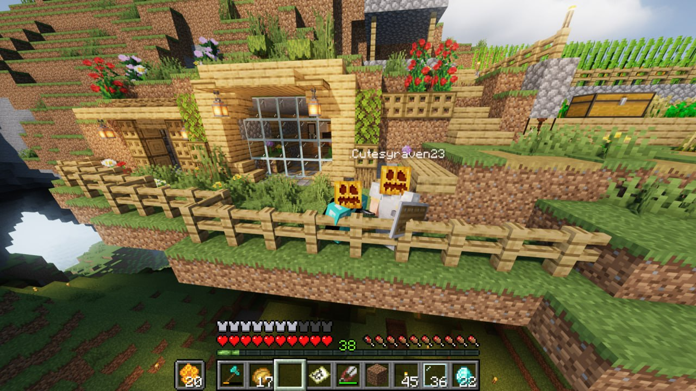
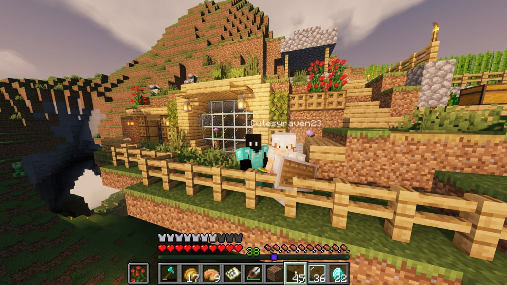
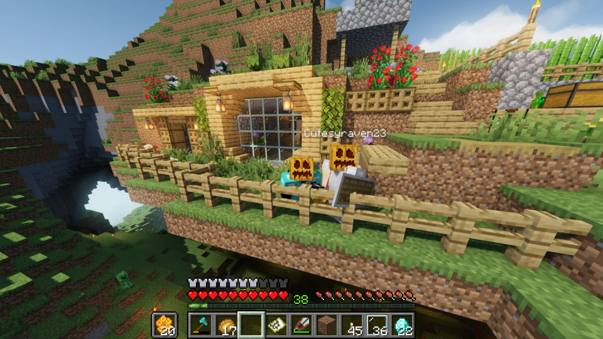

Hi Stephanie, mag-oopen up lang sana ako sa thoughts and feelings ko if it was okay with you? Teka, paano ko ba sisimulan to?
So yea, it's more than a month since I received your first message. Di ko aakalain magmemessage ka non, pero before pa nun, I was actually planning to chat you first. Kukumustahin kita if you were doing well and okay, but I was afraid to do it kasi nahihiya ako.
Tagal ko rin nag-isip ng way para makausap ka or somehow mag-start ulit, that's why I came up with a plan na mag-make at create ng private Minecraft server for the two of us. Almost 2 months ko rin ginawa yun. Trial and error talaga nangyayari non. After nun, natapos ko na, at nahihiya pa rin ako. Thankfully, nag-chat ka at dun na tayo nag-start mag-usap ulit.
So bakit nga ba ako nagco-confess?
First of all, I'm sorry for what I did to you before. Kahit ayoko nang balikan, I still need to. What an immature way to end it like that napaka-irresponsible ko that time na nagawa ko yun. Pero wala, I can't change the past, but I acknowledge it and I'm deeply sorry for that.
Hindi na matatama ang nangyari kahit gugustuhin ko man. After mangyari nun, nanahimik or nawalan ako ng gana for almost a week, iniisip ko everyday kung bakit ko ginawa yun.
Ang nangyari kasi that time pagkaka-alala ko, kaya ko naiisip yon is overwhelmed sa lahat from school to bahay dami kung iniisip, "paano kung mag-fail ako?", "What if hindi ko maabot yung with Honors that time?", "Ano nalang sasabihin ni mama?" sama-sama at nagpadalos-dalos lang ako sa emotions ko.
Naisip ko kasi that time na itigil kasi baka madamay kita emotionally at bumaba rin academic performance mo. Di ko man lang naisip na ayusin muna, nag-sum up lang ako ng conclusion na i-end agad yun. I still regret it hanggang ngayon, it leaves you a scar that would heal, but will leave a mark.
Dati, I tried escaping from it. Nilibang ko sarili ko, ginawa ko lahat ng hobbies ko at nag-explore ako ng kung ano ano, pero yun nga, dumating sa point na kahit favorite hobbies ko, nawalan nalang ako bigla ng gana gawin. Halos lahat nawalan ng meaning. Totoo nga yung sinasabi nila na once na mawala ang tao na matagal mong nakasama affectionately, it's not gonna be the same kahit ano pa man mangyari.
Again, I'm deeply sorry for what I did. Pero ngayon, dahil hinarap ko ang lahat isa-isa nag-backread kasi ako sa chats natin from the past months and I realized everything. I learned from my mistakes. I learned from everyone, sa mga friends ko, humingi ako ng advice what to do, and each of them gave me a lesson, pati mga teachers. Not that directly humingi ako ng tulong sakanila, pero sa mga stories nila, natuto ako.
Na-realize ko rin na distance doesn't automatically mean something can't work. As long as both people genuinely want it and are willing to work for it, i know distance is something that can be overcome. Kahit gaano pa kalayo, if both people continue choosing each other and taking care of what they have, that bond can stay strong, strong enough that distance itself won't be able to break it.
So yun na nga, I'm here to be completely honest, matapang na sasabihin, I still like you, and I was genuinely ready to start over and court you. Can I rebuild our Atlantis? I was the one who let it sink with my emotions. It won't be the same, and I dont expect it to be. But I want to spend my time proving I can build something better. Pero I've been feeling the distance between us, and I don't want to force something if di na tayo pareho ng nararamdaman. Sinasabi lang to so we both have clarity. Whatever your thoughts or decisions are, I'll respect it.
So before this confession ends i just want to say thank you for being part of my life, such a truly wonderful person I met kakaiba ka talaga sa lahat in a good way of course, that's why I fell for you nga diba? Di ka kasi tulad ng iba, you're kind & passionate. sana never kang magbabago kahit gaano pa maging ka-toxic ang mundo. Diba nga, if you can't find kind people, be one!
Basta balang araw, who knows? pag naging rich single tito ako, ikaw palagi kung maaalala. Don't worry yung server naka-open naman yan as always kung maglalaro ka, minsan nao-off kasi nabubunot ko accidentally. Pero kung somehow biglang tumigil or nasira, i-sesend ko naman sayo yung world file, tuturuan kita paano i-save sa laptop mo para malaro mo parin kahit wala sa server ko yung world or pwede ko din i-import sa server mo.
Thank you so much for everything, di kita malilimutan, Mosh. ❤️🩹


